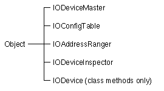
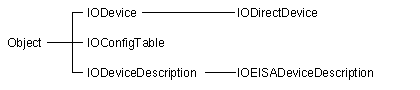

Copyright ©1995 by NeXT Computer, Inc. All Rights Reserved.
Classes
| The Driver Kit has two main groups of classes--those that user-level nondriver programs can use, and those used by drivers. |
|  |
| Figure 5-1. Classes Used by User-level Nondriver Programs
The classes used by drivers are further divided into those that are device-independent and those that are only used for specific kinds of devices. |
|  |
| Figure 5-2. Device-independent Classes Used by Drivers
See Chapter 3 for information on the classes used for specific kinds of devices. Some of the methods in the Driver Kit classes are stubs: they simply return without doing anything. Their method description says that they do nothing. They're typically hardware dependent, so you can implement them based on how your hardware operates and what interface you have available to the hardware. However, these methods provide a framework for you to build your driver on. Note: The disk driver classes (IODisk, IOLogicalDisk, and IODiskPartition) are public but haven't been documented yet.
Other Classes Available to Drivers Besides the Object class and the classes documented here, four more classes are available for drivers' use. Three of these classes--NXLock, NXConditionLock, and NXSpinLock--are part of the Mach Kit, and are implemented at both user and kernel level. NXRecursiveLock, also part of the Mach Kit, is not available at kernel level. See the "Mach Kit" chapter in NEXTSTEP General Reference for more information. |